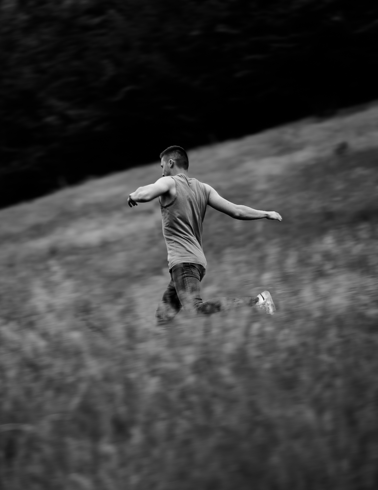

Numérique
Analogique
Numérique
Mon élement
Dominée par les teintes verdoyantes, elle souffle un instant au milieu de la nature grandissante.
Sony Alpha7 II | Olympus Zuiko 50mm F1.8
29/06/2021
47°55 N | 6°57 E
Grandeur
Sentiment de légèreté créé par cette impression de hauteur durant la Golden Hour.
Sony Alpha7 II | Olympus Zuiko 50mm F1.8
29/05/2021
47°54 N | 7°5 E
lumière
Bain de lumière.
Sony Alpha7 II | Olympus Zuiko 50mm F1.8
24/02/2021
47°48 N | 7°6 E
fumée
Juste une dernière fois.
Sony Alpha7 II | Olympus Zuiko 50mm F1.8
28/10/2020
47°52 N | 7°0 E

fearless
Sentiment de déja vu.
Sony Alpha7 II | Olympus Zuiko 50mm F1.8
15/07/2020
47°54 N | 7°5 E